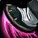
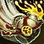
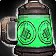
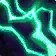
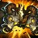

Start
Decisions for you
- Faction (permanent, chosen at the end of the Wandering Isle): Alliance or Horde. See the faction card below. ⚠️ No source ranks one faction as faster for a Monk, so this is purely your call.
- Level 45 talent: I recommend Chi Brew; Power Strikes and Ascension are fine too (Spec tab).
- Professions: my pick is Mining + Blacksmithing; the speed alternative is Mining + Herbalism (Profs tab).
- Stance while solo: sources disagree. Icy Veins and Wowhead say stay in Stance of the Sturdy Ox always; Warcraft Tavern says Fierce Tiger is OK for single targets (Tank tab).
What this is
Grolborne is a Pandaren Brewmaster Monk in Mists of Pandaria Classic. This is a ~2 week warm-up for Forever, so nothing in here is Forever content.
Brewmaster is the tank spec. Icy Veins: very safe, but slower than Windwalker for leveling. Wowhead: not the most popular leveling spec, but the Monk's mobility plus a defense and AoE kit, strong early Keg Smash damage, and quick dungeon queues make it great if you want to level through dungeons.
Sources: IV Leveling Wowhead BM LevelingPandaren racials
| Epicurean | 100% more stats from Well Fed food |
| Inner Peace | Twice as much rested experience |
| Gourmand | +5 Cooking skill |
| Bouncy | Half falling damage |
| Quaking Palm | Incapacitates the target 4 s (turns off your attack) |
Rested XP: log off in an inn or rest area and kills give 200% more XP while it lasts. It builds 5% per 8 hours of rest up to 150%, and Pandaren build it twice as fast.
Sources: Wowhead Pandaren Wowhead Leveling TipsWandering Isle walkthrough
Tap a box when you finish a stage. There are no optional quests on the isle, so pick up every quest you see (it saves backtracking). No mailboxes, and no Cooking or Fishing trainers. Whittler Dewei (63, 41.6) and Elder Oakpaw (50.6, 58.6) teach the other professions if you want them early. The isle also has no class trainers, and Monk abilities are learned automatically as you level.
- Much to Learn → The Lesson of the Iron Bough: grab weapons from a weapon rack and equip them.
- The Lesson of the Sandy Fist: destroy 5 training targets.
- The Lesson of Stifled Pride: defeat 6 sparring trainees in the sparring hut to the east.
- The Lesson of the Burning Scroll: take the stairs (don't jump) to the Edict of Temperance on the top floor of the hut.
- The Disciple's Challenge: beat Jaomin Ro near the gazebo (harmless at this level).
- Aysa of the Tushui: go to Merchant Lorvo at Fu's Pond. He has The Missing Driver (find Min Dimwind to the north) and Items of Utmost Importance (6 Stolen Training Supplies from Amberleaf Scamps). Then The Way of the Tushui at the cave (a progress bar fills as you fight Amberleaf Troublemakers).
- Ji of the Huojin: Wu-Song Village to the north. The Way of the Huojin (8 Fe-Feng), Kindling the Fire (5 Dry Dogwood Root), Fanning the Flames (Shrine of the Summer Breeze, use the small Wind Stone at the big one).
- The Spirit's Guardian → Shrine of Inner-Light cave (west of the village) → Master Li Fei: The Challenger's Fires (light the torch, then the Red, Blue and Violet braziers), Only the Worthy Shall Pass (defeat Li Fei), Huo, the Spirit of Fire.
- The Passion of Shen-zin Su: bring Huo to the temple (south). The innkeeper Cheng Dawnscrive is there, so you can set your Hearthstone.
- The Singing Pools: meet Aysa. Whittler Dewei's hut on the way teaches gathering and crafting professions.
- Stronger Than Reeds (Jojo): 8 Hard Tearwood Reeds. Required, not optional. Water turns you into a frog and cranes will eat you, so stay on dry land.
- The Lesson of Dry Fur: cross the balance poles to the Training Bell (only get on a pole from dry land). The Lesson of the Balanced Rock: fight 6 Tushui Monks while standing on a pole.
- Finding an Old Friend → The Sun Pearl (from an Ancient Clam in the pool) and The Sting of Learning (6 Water Pincers) → Shu, the Spirit of Water → A New Friend (ride 5 water spouts).
- The Source of Our Livelihood: ride the yak cart to Ji. Rascals (10 Plump Virmen), Still Good! (3 turnips, 3 carrots, 3 pumpkins), Missing Mallet (Ki-Han Brewery; Raggis can be pulled to the guards), Stronger Than Wood (12 planks, for Jojo), Raucous Rousing (ring the gong), Not In the Face! (ask Shu), then ride the cart back for The Spirit and Body of Shen-Zin Su.
- Morning Breeze Village → Rewritten Wisdoms (burn 5 scrolls), Tools of the Enemy (8 brushes), Stronger Than Stone (12 stone blocks, for Jojo).
- The Direct Solution (20 Fe-Feng in Fe-Feng Village; Ji helps with AoE), Do No Evil (Ruk-Ruk), Monkey Advisory Warning (8 firework bundles), Stronger Than Bone (Jade Tiger Pillar to Jojo).
- Balanced Perspective (Aysa on the ropes) → Dafeng, the Spirit of Air in the Chamber of Whispers (wait for the winds to stop; it only appears after Stronger Than Bone) → Battle for the Skies: use the firework launchers when Zhao-Ren is overhead, then fight him when he lands.
- Worthy of Passing (Guardian of the Elders), Unwelcome Nature (8 Thornbranch Scamps), Small, But Significant (8 charms), Passing Wisdom, The Suffering of Shen-zin Su (hot air balloon, then talk to Elder Shaopai).
- Bidden to Greatness (open the Mandori Village and Pei-Wu gates), Preying on the Predators (9 tigers), Stocking Stalks (10 bamboo), Wrecking the Wreck, Handle With Care (8 charges), Evil from the Seas (8 Darkened), Urgent News.
- Delora: None Left Behind (3 sailors), Medical Supplies (8), From Bad to Worse (8 Deepscale Tormentors), An Ancient Evil (Vordraka: dodge the spike wave and the wide cone smash; kill the adds while Aysa tanks), Risking It All (follow Aysa right away or the quest can stick; if it does, abandon and retake it), The Healing of Shen-zin Su (defend the healers).
- New Allies: ride the cart back to the Temple of Five Dawns and turn in to the Spirit of Master Shang Xi.
- A New Fate: talk to Aysa and Ji if you want to hear their thoughts, then choose Alliance or Horde with the Spirit. After a cutscene you appear outside your new capital and speak to Aysa (Alliance) or Ji (Horde). It cannot be changed by in-game means.
Faction choice (at A New Fate)
The choice can't be changed in-game later (only out-of-game faction change). Pick based on where friends or your guild are. Pandaren racials are identical either way.
Sources: Warcraft Wiki A New Fate Warcraft Wiki Wandering Isle Warcraft Tavern Wandering Isle Warcraft Tavern Get to PandariaWhere to go next
- Capital boards: Hero's Call Board (Stormwind, center of the Trade District) or Warchief's Command Board (Orgrimmar, in front of Grommash Hold). They always have a breadcrumb to a zone for your level.
- Then follow the 1-90 tab (zone by level range, dungeons that open).
- At level 20 your Monk hub, the Peak of Serenity, opens via Zen Pilgrimage (for the 50% XP Enlightenment dailies).
Leveling 1-90
Tap a range to open it. Check it off and it collapses. In MoP Classic you level 1-58 in the old world (Cataclysm version), then Outland, Northrend, the Cataclysm zones, and finally Pandaria at 85. Zone suggestions are sources' recommendations, not rules.
⚠️ The 1-85 zone ranges and the 1-80 dungeon level ranges come from Cataclysm / Burning Crusade / Wrath Classic guides. MoP Classic uses that same world, but I did not find a MoP Classic page that repeats them.Everything is on the Start tab. You finish around level 10 and then choose Alliance or Horde.
Sources: Warcraft Tavern Wandering Isle Warcraft Wiki A New FateUse the Hero's Call Board (Alliance, Stormwind Trade District) or Warchief's Command Board (Horde, in front of Grommash Hold, Orgrimmar). They always hand you a breadcrumb to a zone for your level.
Dungeons you can enter now (Cataclysm-era levels):
| Ragefire Chasm | Orgrimmar · 15-21 (enter at 10) |
| The Deadmines | Westfall · 15-21 (enter at 10) |
| Wailing Caverns | The Barrens · 15-25 (enter at 10) |
| Shadowfang Keep | Silverpine Forest · 16-26 (enter at 11) |
Specialization abilities (Stance of the Sturdy Ox, Keg Smash) start at level 10 and 11. Pick Brewmaster at 10.
⚠️ The pick-your-spec prompt timing at 10 is inferred from the ability table; no page says it outright.Sources: Warcraft Tavern Cata 1-60 Wowhead Cata Zones Warcraft Wiki Wandering Isle Warcraft Tavern Monk Leveling Blizzard Dungeon Level Changes Warcraft Wiki Monk abilitiesDungeons:
| Stormwind Stockade | Stormwind · 20-30 (enter at 15) |
| Blackfathom Deeps | Ashenvale · 20-30 (enter at 15) |
Plus the level 10 dungeons above (Deadmines, Ragefire, Wailing Caverns, Shadowfang).
Sources: Warcraft Tavern Cata 1-60 Blizzard Dungeon Level ChangesDungeons:
| Gnomeregan | Dun Morogh · 24-34 (enter at 19) |
| Scarlet Monastery: Graveyard | Tirisfal Glades · 26-36 (enter at 21) |
Dungeons:
| Razorfen Kraul | The Barrens · 30-40 (enter at 25) |
| Maraudon: Purple | Desolace · 30-40 (enter at 25) |
| Scarlet Monastery: Library | Tirisfal Glades · 29-39 (enter at 21) |
Gnomeregan, Scarlet Graveyard, Stockade and Blackfathom are still in range.
Sources: Warcraft Tavern Cata 1-60 Blizzard Dungeon Level ChangesAt 30 a Monk trainer can teach Dual Specialization (info only).
Dungeons:
| Scarlet Monastery: Armory | Tirisfal Glades · 32-42 (enter at 21) |
| Maraudon: Orange | Desolace · 32-42 (enter at 25) |
| Maraudon: Pristine Waters | Desolace · 34-44 (enter at 25) |
| Uldaman | Badlands · 35-45 (enter at 30) |
Dungeons:
| Scarlet Monastery: Cathedral | Tirisfal Glades · 35-45 (enter at 21) |
| Dire Maul East | Dire Maul · 36-46 (enter at 31) |
| Scholomance | Western Plaguelands · 38-48 (enter at 33) |
| Dire Maul West | Dire Maul · 39-49 (enter at 34) |
| Razorfen Downs | The Barrens · 40-50 (enter at 35) |
Dungeons:
| Dire Maul North | Dire Maul · 42-52 (enter at 37) |
| Stratholme: Main Gate | Eastern Plaguelands · 42-52 (enter at 37) |
| Zul'Farrak | Tanaris · 44-54 (enter at 39) |
Dungeons:
| Stratholme: Service Entrance | Eastern Plaguelands · 46-56 (enter at 41) |
| Blackrock Depths: Prison | Blackrock Mountain · 47-57 (enter at 42) |
Dungeons:
| Sunken Temple | Swamp of Sorrows · 50-60 (enter at 45) |
| Blackrock Depths: Upper City | Blackrock Mountain · 51-61 (enter at 46) |
Dungeons:
| Lower Blackrock Spire | Blackrock Mountain · 55-65 (enter at 48) |
| Upper Blackrock Spire | Blackrock Mountain · 55-65 (enter at 48) |
Outland opens at 58, so you don't have to finish this zone.
Sources: Warcraft Tavern Cata 1-60 Warcraft Tavern Monk Leveling Blizzard Dungeon Level ChangesSame for both factions. Go to Outland at 58 (Warcraft Tavern: big jump in loot and XP per expansion). Zone ranges: Hellfire Peninsula 58-62 · Zangarmarsh 61-64 · Terokkar Forest 62-66 · Nagrand 64-66 · Blade's Edge Mountains 65-68 · Netherstorm 67-70 · Shadowmoon Valley 67-70.
Dungeons (Burning Crusade Classic ranges):
| Hellfire Ramparts | 60-62 |
| The Blood Furnace | 61-63 |
| The Slave Pens | 62-64 |
| The Underbog | 63-65 |
| Mana-Tombs | 64-66 |
| Auchenai Crypts | 65-67 |
| Old Hillsbrad Foothills | 66-68 |
| Sethekk Halls | 67-69 |
| The Steamvault | 68-70 |
| Shadow Labyrinth | 69-70 |
| The Shattered Halls | 69-70 |
| Black Morass, Botanica, Mechanar, Arcatraz | 70 |
Go to Northrend at 68 (Warcraft Tavern). Zone ranges: Borean Tundra and Howling Fjord 68-72 · Dragonblight 71-75 · Grizzly Hills 73-75 · Zul'Drak 74-76 · Sholazar Basin 76-78 · Crystalsong Forest, Storm Peaks, Icecrown 77-80.
Dungeons (Wrath Classic ranges):
| Utgarde Keep | 70-72 |
| The Nexus | 71-73 |
| Azjol-Nerub | 72-74 |
| Ahn'kahet: The Old Kingdom | 73-75 |
| Drak'Tharon Keep | 74-76 |
| The Violet Hold | 75-77 |
| Gundrak | 76-78 |
| Halls of Stone | 77-79 |
| Halls of Lightning, Oculus, Utgarde Pinnacle, Culling of Stratholme, Trial of the Champion, Forge of Souls, Pit of Saron, Halls of Reflection | 79-80 |
Zone ranges: Mount Hyjal and Vashj'ir 80-82 · Deepholm 82-83 · Uldum 83-84 · Twilight Highlands 84-85. Mastery unlocks at 80 (it only improves Stagger for you, so Wowhead says mostly ignore it while leveling).
Dungeons (Cataclysm Classic launch table):
| Blackrock Caverns | 80+ |
| Throne of the Tides | 80+ |
| The Stonecore | 81+ |
| The Vortex Pinnacle | 82+ |
| Halls of Origination | 83+ |
| Lost City of the Tol'vir | 83+ |
| Grim Batol | 84+ |
At 85 the Heroic Deadmines and Shadowfang Keep also open.
⚠️ A different source (PC Gamer) lists slightly different recommended ranges (e.g. 80-83, 82-85). I used Wowhead.Sources: Wowhead Cata Zones Wowhead Cata Dungeons Wowhead BM LevelingZone order: Jade Forest 85-87 → Valley of the Four Winds 86-90 and Krasarang Wilds 86-90 (either order) → Kun-Lai Summit 86-90 → Townlong Steppes 88-90 → Dread Wastes 89-90. Vale of Eternal Blossoms is level 90 content.
The Jade Forest storyline (putting the Serpent's Heart together) leads you to the Temple of the Jade Serpent dungeon, and finishing it hands you Moving On, which sends you to the Valley of the Four Winds (Wowhead).
Dungeons:
| Temple of the Jade Serpent | 85-90 · LFD 85-87 · Jade Forest (56, 58) |
| Stormstout Brewery | 85-90 · LFD 85-87 · Valley of the Four Winds (36, 69) |
| Shado-Pan Monastery | 87-90 · LFD 87-88 · Kun-Lai Summit (36.8, 47.6) |
| Mogu'shan Palace | 87-90 · LFD 87-88 · Vale of Eternal Blossoms (80.8, 32.7) |
| Gate of the Setting Sun | 88-90 · LFD 89 · Vale of Eternal Blossoms (16, 75) |
| Siege of Niuzao Temple | 88-90 · LFD 89 · Townlong Steppes (36, 84) |
Item level requirements: 325 for the first two, 393 for the rest. Heroics (Scarlet Halls, Scarlet Monastery, Scholomance and the six above) need level 90. Pick up each dungeon's quests before you queue (Wowhead, Icy Veins).
⚠️ Apart from the Jade Forest chain leading into Temple of the Jade Serpent, I did not find a source naming the quest that sends you to each dungeon. Check the quest log when you reach each hub.Sources: Wowhead Leveling Tips Warcraft Tavern Get to Pandaria Wowhead Jade Forest Warcraft Tavern MoP Dungeons Wowhead MoP Phase 1 IV DungeonsRotation and talents
Brewmaster basics
- Stay in Stance of the Sturdy Ox: -25% damage taken, +20% Stamina, +10% Energy regen, immunity to crits (Icy Veins), and it enables Stagger. Specialization abilities start at 10.
- Resources: Energy (max 100) pays for Chi builders like Jab. Chi (max 4, or 5 with Ascension) pays for finishers. Chi decays when you leave combat, so fights start at 0 Chi.
- Keg Smash (L11) generates 2 Chi and covers enemies within 8 yards of your target in Dizzying Haze (50% slow, 15 s). Expel Harm (L26) heals a little and builds Chi.

Blackout Kick (L7) spends Chi; from 34 (Brewmaster Training) it gives Shuffle (6 s, +20% Stagger), so keep it up.
Core priority (about L34 and up)
- Blackout Kick if Shuffle is missing
- Expel Harm when Desperate Measures is active (45+, under 35% health)
- Touch of Death on a fight you can finish (3 Chi; kills a target below your max health)

Elusive Brew (off the global) at 13+ stacks (36+)- Keg Smash on cooldown, especially at 2 or less Chi
- Expel Harm on cooldown if you aren't at full health
- Blackout Kick to keep Shuffle up
- Jab at 70+ Energy (not if it would overcap Chi)
- Tiger Palm as the filler
3+ enemies: Keg Smash first, then Spinning Crane Kick (46+), and Breath of Fire only if you'll still have Chi for Shuffle. The header Rotation button shows the list for your current level.
Sources: Wowhead BM Leveling Wowhead BM Rotation IV Rotation Warcraft Tavern Monk LevelingDefensives (what each does)
| Guard | L26. 2 Chi, off the global, 30 s cooldown, absorbs damage and makes your self-heals 30% stronger. Cast Tiger Palm first for +15% absorb. |
| Fortifying Brew | L24. 20 s: +20% health, +20% Stagger, -20% damage taken. Use it before the big hit. |
| Elusive Brew | L36. Auto-attack crits give 3 stacks each (max 15). It gives +30% dodge for 1 s per stack, 6 s cooldown, so Icy Veins says use it above 6 stacks (Wowhead: always at 13+ so you don't cap). Off the global. |
 Purifying Brew | L75. 1 Chi clears all Staggered damage. Maintaining Shuffle matters more than spamming it. |
| Zen Meditation | L82. Channel: -90% damage for 8 s and redirects the next 5 harmful spells on your group to you. Breaks on movement or a melee hit. |
| Avert Harm | L48. Redirects 20% of damage taken by group members within 10 yards to you for 6 s (ends early under 10% health). Risky. |
Gift of the Ox (L56): melee hits can drop healing spheres next to you; walk into them. Vengeance (L10): damage you take raises your Attack Power for 20 s.
Sources: IV Rotation Wowhead BM Rotation Wowhead BM LevelingTalents
Talent tiers unlock at 15, 30, 45, 60, 75 and 90, all specs share the same list. Icy Veins notes you can change them easily, so none of these picks is locked in.
Level 15: Tiger's Lust
| Celerity | Roll/Chi Torpedo recharge 5 s shorter, +1 charge |
| Tiger's Lust | Removes snares/roots from you or a friend and +70% move speed for 6 s, 30 s cooldown |
| Momentum | +25% move speed for 10 s per Roll, stacks to 2 |
Icy Veins and Warcraft Tavern both pick Tiger's Lust: it gets you out of sticky spots and melee mobs snare a lot. Momentum is the speed-run alternative before you own a mount (up to +50%).
Sources: IV Leveling Warcraft Tavern Monk LevelingLevel 30: Chi Wave
| Chi Wave | Bounces between up to 7 nearby allies/enemies, 15 s cooldown, free |
| Zen Sphere | Healing/damage sphere, 10 s cooldown, free |
| Chi Burst | 40-yard cone heal/damage, 30 s cooldown |
All three leveling guides lead with Chi Wave (damage and healing at once, free). Wowhead says swap to Chi Burst for big dungeon pulls. Zen Sphere is the weakest solo.
Sources: IV Leveling Warcraft Tavern Monk Leveling Wowhead BM LevelingLevel 45: Chi Brew
| Power Strikes | Extra Chi from some abilities (20 s internal cooldown) |
| Ascension | +1 max Chi, +15% Energy regen |
| Chi Brew | Instantly gain 2 Chi, 45 s cooldown; Wowhead: also 5 Elusive Brew stacks per cast |
My pick: Chi Brew. Icy Veins calls it excellent for dungeons and group content and Warcraft Tavern picks it (fast fight starts). Wowhead says pure solo questing prefers Power Strikes; Warcraft Tavern calls Ascension good for steady energy, especially AoE. All three are fine.
Sources: IV Leveling Warcraft Tavern Monk Leveling Wowhead BM LevelingLevel 60: Charging Ox Wave
| Ring of Peace | Silence/disarm ring, 45 s cooldown |
| Charging Ox Wave | 30-yard line stun for 3 s, 30 s cooldown |
| Leg Sweep | 5-yard stun for 5 s, 45 s cooldown |
Icy Veins and Warcraft Tavern both pick Charging Ox Wave for leveling (shortest cooldown). Leg Sweep is the endgame dungeon default per Warcraft Tavern's tank guide.
Sources: IV Leveling Warcraft Tavern Monk Leveling Warcraft Tavern BM TalentsLevel 75: Diffuse Magic
| Healing Elixirs | Heals 15% max health when you use a Brew (internal cooldown) |
| Dampen Harm | Halves the next 3 big hits, 1.5 min cooldown |
| Diffuse Magic | -90% magic damage for 6 s and reflects spells |
Icy Veins and Warcraft Tavern pick Diffuse Magic for leveling. Icy Veins calls Dampen Harm "basically useless" while leveling because quest mobs seldom hit that hard (it becomes the default pick in raids).
Sources: IV Leveling Warcraft Tavern Monk Leveling Warcraft Tavern BM TalentsLevel 90: Rushing Jade Wind / Xuen
| Rushing Jade Wind | AoE option, best at 3+ targets |
| Invoke Xuen, the White Tiger | Single-target option; Xuen also taunts |
| Chi Torpedo | Longer, healing Roll |
Only matters if you reach 90. Warcraft Tavern: Rushing Jade Wind for AoE pulls, Xuen for single targets, and you swap between them.
Sources: Warcraft Tavern BM Talents IV TalentsGlyphs
Major: Glyph of Rapid Rolling (Roll travels farther in quick succession), Glyph of Fortuitous Spheres (a free healing sphere when health drops below 25%, 30 s internal cooldown), Glyph of Spinning Crane Kick (no movement slow while spinning), Glyph of Touch of Death (no 3 Chi cost, longer cooldown; for elite quest enemies), Glyph of Fortifying Brew (Icy Veins: damage reduction 25%, health bonus 10%), Glyph of Leer of the Ox (adds a statue taunt).
Minor: Glyph of Water Roll, Glyph of Spirit Roll (Roll while a ghost), Glyph of Zen Flight (instant flying form; needs level 60+).
Warcraft Tavern lists the slot levels as 25, 50, 75 for both major and minor glyphs and suggests Rapid Rolling / Spinning Crane Kick / Fortuitous Spheres in that order.
⚠️ Glyph slot levels are only stated by Warcraft Tavern.Sources: IV Leveling Wowhead BM Leveling Warcraft Tavern Monk LevelingStats and gear
Wowhead's leveling priority for Brewmaster: Agility > Critical Strike > Haste > Hit/Expertise (only matters against enemies 3+ levels above you) > Mastery (unlocks at 80, only improves Stagger; mostly ignore it while leveling). Always prefer the highest item level piece.
Warcraft Tavern's general order is Agility, Mastery, Crit, Haste, which leans toward the endgame tank priorities rather than leveling.
Monks use Fist Weapons, Polearms, Staves and 1H Axes/Maces/Swords, and can't use a shield. Dual wielding 1H is usually better than one 2H (Warcraft Tavern). Cloth is fine until 50; from 50 wear Leather (Leather Specialization).
⚠️ Stat priorities differ between sources; I'm following Wowhead's leveling-specific order.Sources: Wowhead BM Leveling Warcraft Tavern Monk Leveling IV RotationBars
Same 7/7/7 layout as your paladin app. Top = clicked combat cooldowns, Middle = keys 1-7, Bottom = out-of-combat. Slots appear as the ability unlocks at that level, and gold-edged slots are new. Roll lives on key 5. Key 1 is the most-used key.
Not on the three bars
Spinning Crane Kick (46) and Breath of Fire (18) for pack pulls · Chi Brew (45) · Charging Ox Wave (60) · Diffuse Magic (75) · Clash (18) · Disable (28) · Spear Hand Strike (32) · Paralysis (44) · Nimble Brew (30) · Avert Harm (48) · Zen Meditation (82) · Crackling Jade Lightning (54) · Healing Sphere (64).
Swap Spinning Crane Kick in for key 6 (Expel Harm) or key 7 on big pulls if you like; that's your call. Breath of Fire is on key 7 from 18, then replaced by Chi Wave at 30 since Wowhead says it's rarely worth it from 34.
Sources: Wowhead BM Leveling Wowhead BM Rotation Warcraft Wiki Monk abilitiesProvoke macro (Icy Veins)
#showtooltip /cast [nomod] Provoke /target [mod:shift] Black Ox Statue /cast [mod:shift] Provoke /cast [mod:ctrl] Leer of the Ox
Provoke on the Black Ox Statue (level 70) taunts every enemy within 8 yards of it. Leer of the Ox needs the Glyph of Leer of the Ox and doesn't work on raid bosses.
Sources: IV Macros IV RotationTanking as Brewmaster
Solo leveling notes
- Pull big. Wowhead: Brewmaster trades damage for defense and AoE, so use it on kill-X quests. Pulls just take a bit longer solo.
- Provoke (L14) is the only taunt that also speeds the target up by 50%, handy to pull a far-away enemy.

Crackling Jade Lightning (54+) can tag a mob from range. - Touch of Death (L22) is for elites or big quest enemies. Paralysis (L44) works on any controllable enemy but doesn't keep you out of combat if you stray too close.
- Breath of Fire is fine early on for AoE, but rarely from 34 on, when Blackout Kick's Shuffle matters more.
- Stance: Icy Veins and Wowhead say stay in Stance of the Sturdy Ox always (you aren't in it by default after a spec change, and key abilities need it). ⚠️ Warcraft Tavern says Fierce Tiger is OK for damage and movement when not making big pulls. The sources disagree.
- Visit the Peak of Serenity regularly for Enlightenment (50% XP) and class quests. Zen Pilgrimage: Return takes you back to where you left.
- Slower but safer than Windwalker (Icy Veins).
Dungeon tanking basics
- Tanks and healers usually get through the Dungeon Finder queue almost instantly, and Wowhead says Brewmaster's durability makes it great for dungeon leveling. Run each dungeon at least once as it unlocks: all of its quests are available from the dungeon start, so grab them before you queue.
- You set the pace: the tank decides how much to pull, so match it to your healer's mana (Wowhead). Open with Keg Smash: Dizzying Haze slows enemies 50% for 15 s and gives them a 3% chance to hit themselves.
- 3+ enemies: Keg Smash on all of them, then Spinning Crane Kick (46+; it only makes Chi if it hits 3+ and you can't use other abilities during the channel), and Breath of Fire only if you can spare the Chi from Shuffle. Always keep Shuffle up. From 70, summon your Black Ox Statue away from enemies and Provoke it to force everything within 8 yards of it onto you.

Clash (L18): you and the target charge each other and stun everything within 6 yards for 4 s (35 s cooldown).- Use Guard when you expect a hit or health drops, Fortifying Brew before big damage, and Purifying Brew (75) after a big spike.
- Stagger only affects physical damage: 20% of each hit is delayed over 10 s (Shuffle adds another 20%). Magic damage isn't staggered and mostly can't be dodged, so use Diffuse Magic (75 talent) against heavy magic damage.
- Self-heal on demand: Expel Harm, Gift of the Ox spheres (56+), and Healing Sphere (L64, 40 Energy).
Professions
My pick: Mining + Blacksmithing
- Mining is a gathering profession (Wowhead pairs it with Blacksmithing): you gain XP when you skill up, and its Toughness gives +480 Stamina.
- Blacksmithing is Warcraft Tavern's top crafting pick for Brewmaster: two extra sockets (gloves and bracers), which can hold gems like +320 Agility or +640 Mastery/Crit.
- Both trainers are at the Peak of Serenity (Master Brandom), so Zen Pilgrimage covers it. You can also learn most professions on the Wandering Isle (Whittler Dewei, Elder Oakpaw) and buy tools.
Honest take: Warcraft Tavern says crafting professions generally slow leveling and are more about endgame or alts; gathering is what helps leveling. If you want pure speed, take Mining + Herbalism (both give XP on skill-ups; Herbalism's Lifeblood is a big Haste boost). Wowhead suggests gatherers swap one slot to a crafter at max level.
Sources: Warcraft Tavern Monk Leveling Warcraft Tavern BM Professions Wowhead Professions Warcraft Tavern Wandering IsleSecondary professions (no limit)
- First Aid: Wowhead calls it a strong leveling pick (bandages for downtime). Trainer: Master Bier at the Peak of Serenity.
- Cooking: Pandaren get double Well Fed stats. Master Chang at the Peak sells cheap stat foods, upgraded every 10 levels. Cooking and Fishing level easily 1-600 in Pandaria.
- Archaeology: gives some XP as you dig, but depends on dig sites near you.
MoP Classic profession notes
- Primary max is two, secondary has no limit. The new top rank, Zen Master, raises the cap to 600.
- Bag space: you start with a 16-slot bag; bags come from drops, vendors, crafters and the Auction House (Wowhead).
Settings tips
Turn off "Not enough energy" (Error Speech)
Open the game menu → Options → Sound (the checkbox is called Enable Error Speech) and untick it. That silences the character's voice lines like "Not enough energy", "I'm out of range" and "I can't do that yet".
Console version: /console Sound_EnableErrorSpeech 0 (use 1 to turn it back on).
Cooldown numbers on your bars
OmniCC has a MoP Classic build on CurseForge (last updated Dec 14, 2025). It puts countdown text on action bars and almost every other cooldown. Install it from CurseForge with your addon manager.
If you also enable the game's own "Show Numbers for Cooldowns" you'd get two numbers. Leave that off with OmniCC.
⚠️ I only found the built-in "Show Numbers for Cooldowns" checkbox confirmed for retail, not MoP Classic.Sources: OmniCC (CurseForge)Other quality-of-life
- Questie (a questing addon) saves a lot of travel time (Wowhead).
- Minimap tracking can show innkeepers, flight masters and repair NPCs. Toggle it from the minimap (Wowhead).
- Set your Hearthstone at an inn near your questing area (15-minute cooldown). Log out in an inn or rest area for rested XP.
Alt spec: Windwalker (short)
Why you might switch
Icy Veins: Windwalker is the faster leveling spec; Brewmaster is safer but slower. Warcraft Tavern: Windwalker is better against one or two enemies at a time and bursts mobs down chain after chain.
Specialization abilities, including Fists of Fury (L10) and Rising Sun Kick (L56), come online at the same levels as listed in the ability table. At level 30 Dual Specialization is available from a Monk trainer (info only), so you can keep both specs.
Sources: IV Leveling Warcraft Tavern Monk Leveling Warcraft Wiki Monk abilitiesWindwalker quest rotation (Warcraft Tavern)
- Stay in Stance of the Fierce Tiger (the default)
- Expel Harm if hurt and under 2 Chi (26+)
- Chi Brew if under 2 Chi (45+)
- Jab if under 2 Chi
- Tiger Palm to keep Tiger Power up
- Rising Sun Kick on cooldown (56+)
- Fists of Fury on cooldown, unless Tiger Palm or Rising Sun Kick needs to be cast first
- Chi Wave on cooldown (30+), Blackout Kick with spare Chi
- Flying Serpent Kick to gap-close if short on Chi/Energy
Stat order for Windwalker: Agility, Haste, Crit, Mastery (Warcraft Tavern). Warcraft Tavern's talent picks (Tiger's Lust, Chi Wave, Chi Brew, Charging Ox Wave, Diffuse Magic) are the same for every spec.
Sources: Warcraft Tavern Monk LevelingCredits and flags
Spell and class icons © Blizzard Entertainment, downloaded once from Wowhead's public icon CDN and bundled here. Facts come from the linked pages (Icy Veins, Wowhead, Warcraft Tavern, Warcraft Wiki, Blizzard). Personal, non-commercial fan page; not affiliated with Blizzard. MoP Classic only, no Forever content. Items marked ⚠️ could not be fully verified.